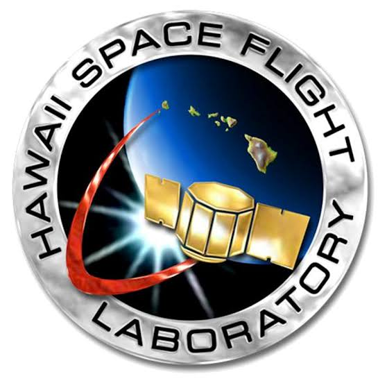
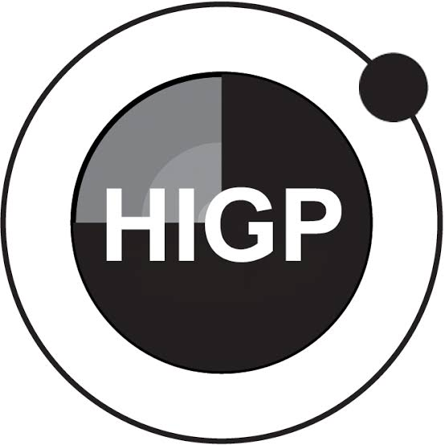
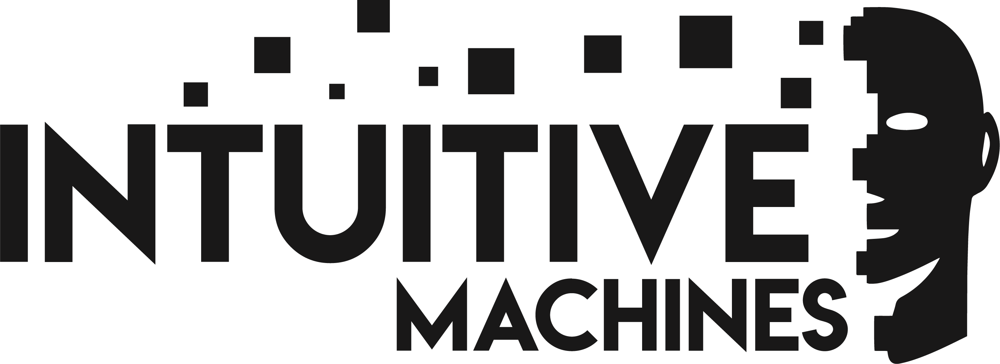

Lunar HyTI
The Lunar Hyperspectral Thermal Imager sees in many colors of heat, from orbit around the Moon. Designed and built by the Hawaiʻi Space Flight Laboratory at the University of Hawaiʻi at Mānoa.
 Visible light
Thermal infrared
Visible light
Thermal infrared
The mission at a glance
- Instrument
- Lunar Hyperspectral Thermal ImagerThermal infrared, 4.5–11.4 µm
- Principal investigator
- Dr. Paul LuceyDeveloper of the instrument’s interferometer
- Designed and built by
- Hawaiʻi Space Flight LaboratoryUniversity of Hawaiʻi at Mānoa
- Spacecraft
- Altus-1Developed by Intuitive Machines. The first satellite in its lunar communications and navigation constellation.
- Orbit
- Highly elliptical, about 2,000 × 20,000 km
- Looking for
- Molecular water, silicate minerals, and meteoroid impact flashes
Why look at the Moon in thermal infrared
The Moon has almost no atmosphere to move heat around, so its surface temperature and the light it emits are set by the ground itself. That emitted infrared carries information about what the surface is made of, and a hyperspectral imager splits it into many narrow bands so a single pixel can show both temperature and composition.
Lunar HyTI covers 4.5 to 11.4 µm and is designed around three science goals:
- Map molecular waterWater has a spectral signature near 6 µm, which falls inside the instrument’s range.
- Map silicate mineralsSilicate mineralogy shows up in the thermal infrared, including on the lunar farside.
- Catch impact flashesSmall meteoroids striking the surface produce brief infrared flashes that the imager can detect.
Full specifications and science goals are on the HIGP Lunar HyTI page.
An imaging spectrometer built for the Moon
The Lunar Hyperspectral Thermal Imager, or Lunar HyTI, was designed and built by the Hawaiʻi Space Flight Laboratory. At its core is an interferometer developed by Dr. Paul Lucey, the mission’s principal investigator.
It is a close derivative of the Hyperspectral Thermal Imager flown on NASA’s HyTI mission, a 6U CubeSat that imaged Earth in thermal infrared. Lunar HyTI keeps that heritage and extends the spectral range to 4.5–11.4 µm. Intuitive Machines is developing Altus-1, the spacecraft the instrument will be installed on.
- CollectOptics gather thermal infrared light from the lunar surface.
- SeparateThe interferometer divides that light into narrow spectral bands.
- ImageEach image records a spectrum at every pixel of the scene.
- DownlinkData returns to Earth for calibration and science analysis.
Heritage: NASA’s HyTI CubeSat
HyTI, the Hyperspectral Thermal Imager, was a 6U CubeSat technology demonstration funded by NASA’s Earth Science Technology Office through its InVEST program. It showed that high spatial and spectral resolution thermal infrared imaging is possible from a very small satellite. Lunar HyTI builds directly on that work.
- Platform
- 6U CubeSatOperated by the Hawaiʻi Space Flight Laboratory
- Imaging
- 25 spectral bands from 8.0 to 10.7 µm60 m ground resolution from a 430 km orbit
- Technology
- No-moving-parts interferometerWith a JPL barrier infrared detector array and onboard processing on CPU, GPU, and FPGA
- Flight
- Launched March 21, 2024To the ISS on a SpaceX resupply mission. Deployed in April 2024 and deorbited on December 17, 2024.
- Earth science
- Volcanoes, wildfires, and soil moisture
Who is building it
- Dr. Paul Lucey, principal investigatorDeveloped the interferometer at the heart of the instrument.
- Hawaiʻi Space Flight Laboratory (HSFL)Designed and built the instrument at the University of Hawaiʻi at Mānoa.
- Intuitive MachinesDeveloping Altus-1, the first satellite in its lunar communications and navigation constellation, which will carry the instrument.



Get in touch
For collaboration, student opportunities, or press questions, write to the Hawaiʻi Space Flight Laboratory.
Learn more about HSFL and its projects on GitHub.